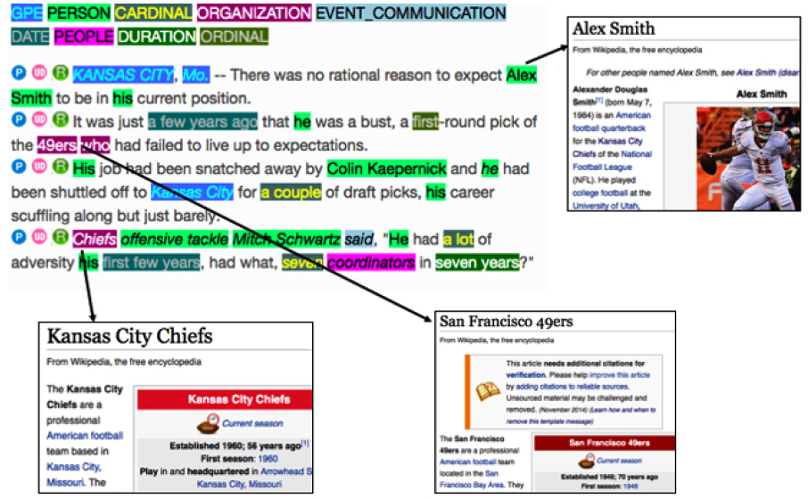
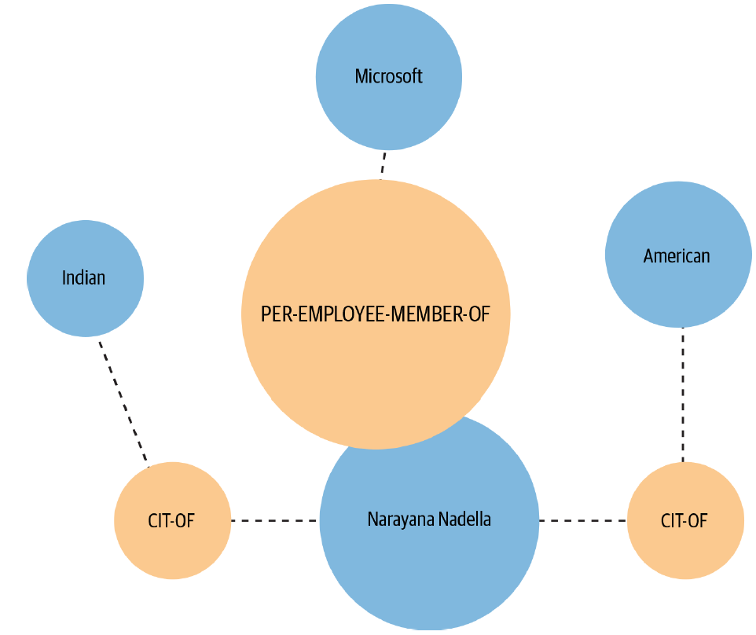

11.2 Other NER Applications
Linking entities and extracting relations between them.
These notes walk through the lecture slides. The original deck is unchanged; use (slides) on the course hub if you want that PDF.
1. After you have the spans
NER says Apple is an organization and Luca Maestri is a person. That is not enough for a newsroom graphic that ties stories to real-world people and companies. You still need to know which Apple, and how two mentions relate.
Imagine you are on the data team at a large paper. The job is to connect names in today's stories to the people and institutions they refer to, then draw the map. That job is several IE tasks stacked on NER and KPE.

2. Disambiguation and linking
Named entity disambiguation (NED) assigns a unique identity to a mention. Apple in an earnings story is Apple Inc. (Q312 on Wikidata), not Apple Records and not the fruit.
Named entity linking (NEL) is NER plus NED: find the span, then point it at an entry in a knowledge base (Wikipedia, Wikidata, an internal client list).
Question answering and knowledge-base construction need NEL. Without it you cannot join "the company said" in story A to the same company in story B.
NEL wants more pre-processing than NER:
- a parse, so you know subjects, verbs, and objects
- coreference, so the company and Apple are one mention chain
- a catalog of candidate entities and their aliases
State-of-the-art linkers are neural and hungry: large annotated sets plus an encyclopedia. In industry, many teams call a service (Watson, Azure, or similar) instead of training from scratch. Build in-house when your entities are internal and the public APIs will never have seen them.
3. Relation extraction
Relation extraction (RE) finds pairs of entities and the link between them. Luca Maestri —finance_chief_of→ Apple. That fact is what populates a knowledge base, improves search, and feeds a QA system.

Approaches, from tight to open:
| Approach | How it works | Tradeoff |
|---|---|---|
| Hand-written patterns / regex | High precision on the patterns you wrote | Low coverage; you will not list every wording |
| Supervised classification | Labeled pairs and a fixed relation inventory | Needs labeled data; closed set of relations |
| Open IE (unsupervised) | Extract triples from text with no fixed list | No training set; noisier, harder to normalize |
The supervised setup is often two classifiers in a row:
- Are these two entities related at all? (binary)
- If yes, which relation? (multiclass)
When you cannot get labels, open IE is the fallback. It reads the web (or your corpus) and emits triples in the language of the sentence, not in a schema you designed.
4. Event and time, briefly
Two neighbors of RE show up in the same projects.
Event extraction asks whether a document (or a sentence) reports an event of a known type—a buyback, a merger, a storm landfall—and who the participants are. It is RE plus a trigger (announced, acquired) and often a time.
Temporal IE pulls dates and relative expressions (last year, Tuesday) into a calendar. News and disaster bots need it; a static gazetteer of names does not.
You will not implement these this week. Know they sit above NER and linking. If the spans are wrong, the event is wrong.
5. What to ship
Do not start by training a linker and a relation model. Start from the question the product must answer.
- If you only need names on a page, stop at NER.
- If you need to merge stories about the same company, you need NEL.
- If you need "who works for whom," you need RE on top of both.
Each layer multiplies annotation cost and pre-processing risk. Off-the-shelf APIs are a reasonable first system. Replace a piece when the API is wrong on your entities, not because a paper beat it on a shared benchmark.
6. Practice
-
NER tags two mentions of Washington. What extra information does NEL need that NER does not have?
-
Write one sentence that contains two entities and a relation. Name the relation in
entity1 —rel→ entity2form. -
When would you pick open IE over a supervised relation classifier?